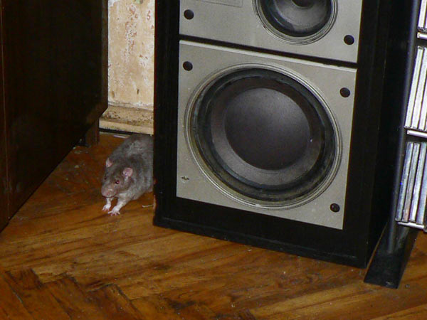

Старичок Сентябрь. Живет сейчас в основном на полке, ближайшей к столовой.

Циклон слегка приболел, и надо было ему скармливать
лекарство.
Лучший метод — смешать лекарство с едой и посадить крыса в переноску, пока
не съест.

— Выпустите, а? Я есть не хочу...
Задача: нвйдите крыса на фото.

— А вот он я!
Дюк Нюкем забрася на шкаф.

Джон Ди изображает Диогена.
Иннокентий... Его-то — пасюк! — не отловишь,
поэтому пытались давать лекарство, подсовывая лично на прогулке.

Кеша на прогулке...
Погрызенная стенка (бетонная, ага) осталась у нас на память.

Дюк Нюкем спускается по стенке вниз.
Пятки-цеплялки крупным планом.

Дюк: — Э! А вы внутри едите!
Сеня и Циклон молчат и жуют.
— Хозяева! Поилку чего бросили?

Кеша в любимом гамаке.

Иннокентий глядит пасючьим взором.
Взгляд дикарей существенно отличается от декорашек...

— Привет! Я погуляю... на кухне, наверное.
(Последнее фото Иннокентия, буквально за полчаса до ухода.
Никогда бы не подумал — он даже стоит "табуреткой"...)
— Хозяева! Уберите, мы эту часть книги уже прочитали!
(выдано наружу из-под шкафа)

Сеня разлегся в гамаке.

Циклон Б на прогулке и в задумчивости.

Решили переоборудовать клетку, заменив все полки на
деревянные,
чтобы не было бортиков и все легко вынималось сбоку.
Верхний отсек.

Нижний отсек, вид спереди.

Нижний отсек, вид сверху.

Циклон Б в новом чистом домике на новой чистой полке.
Теперь передняя стенка открывается!

Убирать клетку стало гораздо проще.
Общий вид новой конструкции.
Все переходы сделаны пандусами, чтобы старичкам было удобно.